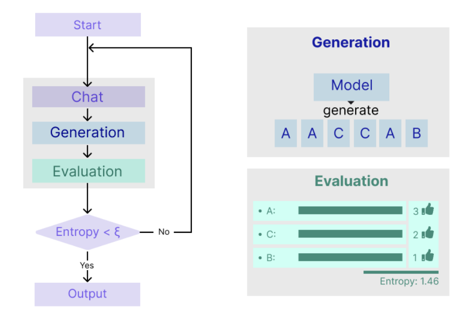

Publications

Llama-3-Meditron: An Open-Weight Suite of Medical LLMs Based on Llama-3.1
AAAI 2025 (GenAI4Health)
[PDF] Open weight medical LLM built on Llama 3.1
AAAI 2025 (GenAI4Health)
[PDF] Open weight medical LLM built on Llama 3.1

GPoeT: a Language Model Trained for Rhyme Generation on Synthetic Data
ACL SIGHUM 2023 (LaTeCH-CLfL)
[PDF] Trained a GPT-2 poet that writes texts with rhymes.
ACL SIGHUM 2023 (LaTeCH-CLfL)
[PDF] Trained a GPT-2 poet that writes texts with rhymes.